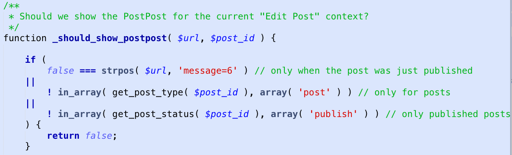

Not even once.
“With great power comes great responsibility-- Voltaire
to not edit core files.”
add_action ( 'publish_post', 'email_friends' );
add_filter ( 'the_title', 'prepend_title' );
functions.phpWhat happens if you want to change or update your theme?
functions.php only for theme or display-related functionality.wp_enqueue_script()
wp_enqueue_stylesheet()
wp_enqueue_scripts action
wp_enqueue_script( 'jquery' );
wp_enqueue_script( 'my-cool-script',
'/path/to/my-cool-script.js',
array( 'jquery' )
);
git diff)git bisect)git merge)git reset)git init: start a new repositorygit status: show the current state of affairsgit add <file>: start tracking a filegit commit: save a checkpointgit diff: what's different now?
<? the_permalink(); ?>
<?php the_permalink(); ?>
<?php
do_some_stuff();
$t = get_the_title();
$title = get_the_title();
$current_post_title = get_the_title();
if($post->ID==1){do_something($post);}
if ( $post->ID == 1 ) {
do_something( $post );
}
$milk = get_the_milk();
if ( thirsty() ) {
if ( ! is_sour( $milk ) ) {
drink_milk(); } }
else { throw_the_milk_out(); }
$milk = get_the_milk();
if ( thirsty() ) {
if ( ! is_sour( $milk ) ) {
drink_milk();
}
}
else {
throw_the_milk_out();
}
$milk = get_the_milk();
if ( thirsty() {
if ( ! is_sour( $milk ) ) {
drink_milk();
}
else {
throw_the_milk_out();
}
}
if ( $id == 1 )
$id == 1 // valid (comparison)
$id = 1 // valid (assignment)
1 == $id // valid (comparison)
1 = $id // invalid (syntax error)
if ( 1 == $id )
